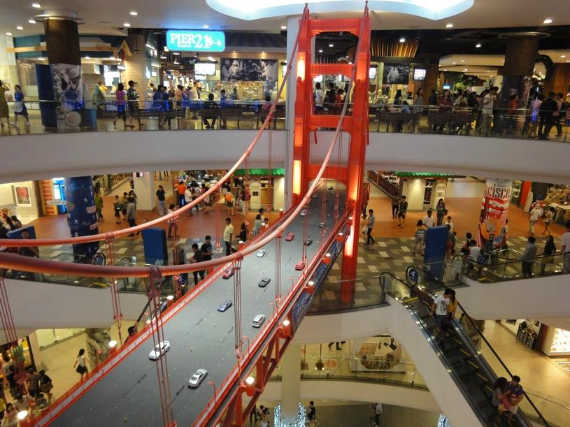

Where can you go shopping
in San Francisco?

Main commercial areas
- Union Square: One of the best known shopping areas in the city. Both the square and its surroundings are full of shops, mostly luxury.
- Union Street: The premises are restored Victorian houses, which undoubtedly brings more charm.
- Upper Fillmore Street: In this area the most exclusive boutiques meet.
- Market Street: It is a street of very varied shops in which some are located economic stores.
- Hayes Valley: You can find the most avant-garde shops.
- Haight Street: If you do not want to spend a lot of money and you're interested in hippie and second-hand clothes establishments, Haigh Street is the right place.
Malls and outlets
- Macy´s: Macy's are the most famous department stores in the United States (similar to 'El Corte Inglés'). In its enormous facilities of Union Square you will find all kinds of products with very varied prices.
- Westfield Shopping Center: This large shopping center has more than 400 stores spread over 10 floors.
- Embarcadero Center: In the heart of the commercial district of San Francisco, more than 100 stores and restaurants of the Embarcadero Center occupy the ground floor of five office towers.
- Premium Outlets: The closest to the city are the following: Gilroy, Livermore, Petaluma, Napa, Vacaville and Folsom (these last three are closest to Sacramento). I recommend those of Gilroy and Livermore, they are closer to San Francisco and you have all kinds of brands to buy at the price of sales throughout the year.